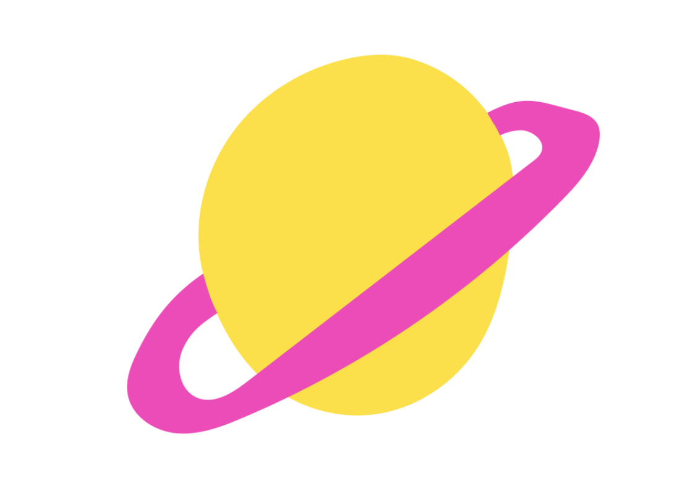

TEMA2

Grundlæggende indhold
I dette tema har vi arbejdet med videoproducering og redesign af hjemmeside. Vi arbejdede med smykkedesigneren Anne Lahn, hvor vi via hendes spraglede og unikke design-univers udarbejdede en hjemmeside, som imødekom hendes ønsker, og hvad vi mente var muligt. Der til udarbjede vi to film, en proces film, med små hurtige klip, for at skabe forståelsen af hendes arbejdes metode/process, som skulle være med til at vække brugerens nysgerrighed på workshop, (den implementeret på sitet). Vi udarbejdede også en “one minute wonder”, hvor vi benyttede interview teknikker, og god forberedelse.
PILOTSITE
REDESIGN